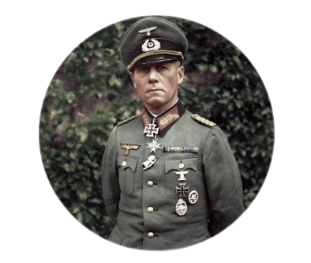
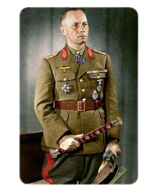

Johannes Erwin Eugen Rommel
(Heidenheim, 15 de novembro de 1891 Herrlingen, 14 de outubro de 1944),
apelidado de "A Raposa do Deserto", foi um militar alemão que serviu como general
marechal de campo da Wehrmacht, as forças armadas da Alemanha Nazista durante a Segunda Guerra
Mundial.
Como oficial, Rommel serviu na Primeira Guerra Mundial e foi altamente condecorado,
recebendo a Pour le Mérite por suas ações na Frente Italiana.
No período entre guerras,
escreveu livros e progrediu na carreira acadêmica e militar.
Em 1937 publicou o livro Infanterie greift an ("Ataques de Infantaria"),
onde dissertou sobre suas experiências em combate. Durante a Segunda Guerra Mundial,
se destacou no comando da 7ª Divisão Panzer do exército alemão, durante a invasão da França,
em 1940. Sua liderança das forças alemãs e italianas durante a Campanha Norte-Africana sedimentou
sua reputação como um dos maiores comandantes e estrategistas com tanques durante o conflito.
Foi no comando do Afrika Korps que ele recebeu a alcunha de der Wüstenfuchs, "a Raposa do Deserto".
Rommel era respeitado até mesmo por seus adversários
os britânicos o reconheceram por seu cavalheirismo e os combates
na África eram frequentemente referidos como "guerra sem ódio".
Após ser derrotado na Segunda Batalha de El Alamein, foi transferido para enfrentar os
Aliados na invasão da Normandia, em junho de 1944.
Rommel apoiou a ascensão de Hitler ao poder, embora sua relutância com relação ao antissemitismo e a
ideologia nazista e seu nível de conhecimento a respeito do Holocausto permaneçam controversos
dentre
acadêmicos. Em 1944 Rommel foi implicado na conspiração que engendrou o atentado de 20 de Julho,
quando membros da Resistência Alemã dentro das forças armadas tentaram assassinar Adolf Hitler.
Devido à posição de Erwin Rommel, como um herói nacional, Hitler preferiu eliminá-lo
silenciosamente,
ao invés de uma execução, e ofereceu a Rommel a opção de cometer suicídio em troca da
certeza de que sua reputação militar permaneceria intacta e de que sua família não sofreria
represálias. Rommel optou pelo suicídio, utilizando uma cápsula de cianeto.
Ele recebeu um funeral de Estado e a imprensa nazista anunciou que o marechal
havia falecido devido a um ferimento sofrido na Normandia.
Rommel se tornou uma figura pública lendária, na propaganda nazista mas também junto aos Aliados
e na cultura do pós-guerra, com muitos autores julgando-o um comandante militar brilhante e
apolítico,
uma vítima do Terceiro Reich. Contudo, sua visão majoritariamente positiva e suas capacidades
organizacionais têm sido questionadas por especialistas que consideram existir um "mito de Rommel".
Sua reputação ilibada durante a guerra foi usada durante a política de rearmamento
da Alemanha Ocidental e a reconciliação com seus antigos inimigos o Reino Unido e os Estados
Unidos,
ao lado da nova República Federal Alemã. Muitos colegas e subordinados de Rommel,
mais notavelmente Hans Speidel, participaram em posições
importantes durante o rearmamento do exército alemão no pós-guerra e no período de integração com a
OTAN.
A maior base militar da Alemanha, o Quartel Marechal-de-Campo Rommel
(Generalfeldmarschall-Rommel-Kaserne),
em Augustdorf, foi assim batizada em sua honra.

Nome completo: Erwin Eugen Rommel
Nascimento: 15 de novembro de 1891
Morte: 14 de outubro de 1944
Anos de serviço: 1911–1944
Patente:Marechal de Campo
Conflitos: As duas grandes guerras
